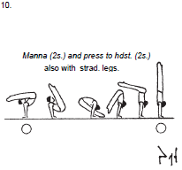

TEŽINSKA OCJENATežinska ocjena prvi je dio ukupne ocjene vježbačevog nastupa. Nju određuju posebni sudci koji se zovi "težinski određivači". Izračunava se iz takozvane "knjige bodova" (Code of Points). Vježbač ima mogućnost podnijeti zahtjev za ispravkom njegove "D" ocjene, no ne i tuđe. |
 |
Jačina težinskih ocjena kreće se uzlaznim abecednim slijedom (Od A sve do H). A : 0.1 B : 0.2 C : 0.3 Posebni dio "D" ocjene su kombinacije (vezanje težinskih ocjena) i posebni uvjeti (ispunjenje određenih parametara) |
OCJENA ODBITAKAOcjena je odbitaka drugi sastavni dio ukupne ocjene vježbačevog nastupa. Najviše je sudaca koji određuju ocjenu odbitaka. Izračunava se na temelju izvedbe natjecatelja u odnosu na njegove pogreške u vježbi (pogrčene noge, dodatni iskoraci, pad iz elementa...) Vježbač nema mogućnost zahtjeva za ispravkom njegove "E" ocjene. |
Ovisno o greški, bodovi se oduzimaju na način : Mala pogreška (0.1) Srednja pogreška (0.3) Velika pogreška (0.5) Pad (1) Sudci ove odbitke oduzimaju od početne vrijednosti : 10.00 i na taj način, uz "D" ocjenu", formiraju konačnu ocjenu. |